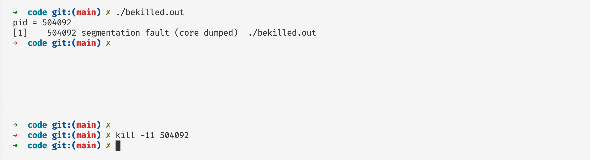

深入剖析Sgementation fault原理
前言
我们在日常的编程当中，我们很容易遇到的一个程序崩溃的错误就是segmentation fault，在本篇文章当中将主要分析段错误发生的原因！
Sgementation fault发生的原因
发生Sgementation fault的直接原因是，程序收到一个来自内核的SIGSEGV信号，如果是你的程序导致的内核给进程发送这个信号的话，那么就是你的程序正在读或者写一个没有分配的页面或者你没有读或者写的权限。这个信号的来源有两个：
- 程序的非法访问，自身程序的指令导致的Sgementation fault。
- 另外一种是由别的程序直接发送SIGSEGV信号给这个进程。
在类Linux系统中，内核给进程发送的信号为SIGGEV，信号对应数字为11，在Linux当中信号对应的数字情况大致如下所示：
1) SIGHUP 2) SIGINT 3) SIGQUIT 4) SIGILL 5) SIGTRAP
6) SIGABRT 7) SIGBUS 8) SIGFPE 9) SIGKILL 10) SIGUSR1
11) SIGSEGV 12) SIGUSR2 13) SIGPIPE 14) SIGALRM 15) SIGTERM
16) SIGSTKFLT 17) SIGCHLD 18) SIGCONT 19) SIGSTOP 20) SIGTSTP
21) SIGTTIN 22) SIGTTOU 23) SIGURG 24) SIGXCPU 25) SIGXFSZ
26) SIGVTALRM 27) SIGPROF 28) SIGWINCH 29) SIGIO 30) SIGPWR
31) SIGSYS 34) SIGRTMIN 35) SIGRTMIN+1 36) SIGRTMIN+2 37) SIGRTMIN+3
38) SIGRTMIN+4 39) SIGRTMIN+5 40) SIGRTMIN+6 41) SIGRTMIN+7 42) SIGRTMIN+8
43) SIGRTMIN+9 44) SIGRTMIN+10 45) SIGRTMIN+11 46) SIGRTMIN+12 47) SIGRTMIN+13
48) SIGRTMIN+14 49) SIGRTMIN+15 50) SIGRTMAX-14 51) SIGRTMAX-13 52) SIGRTMAX-12
53) SIGRTMAX-11 54) SIGRTMAX-10 55) SIGRTMAX-9 56) SIGRTMAX-8 57) SIGRTMAX-7
58) SIGRTMAX-6 59) SIGRTMAX-5 60) SIGRTMAX-4 61) SIGRTMAX-3 62) SIGRTMAX-2
63) SIGRTMAX-1 64) SIGRTMAX
当一个程序发生 segmentation fault 的时候，这个程序的退出码 exitcode 等于 139！

发生 segmentation fault 的一个主要的原因是我们自己的程序发生非法访问内存，同时别的程序给这个进程发送 SIGSGEV 信号也会导致我们的程序发生 segmentation fault 错误。
比如下面的程序就是自己发生的段错误（发生了越界访问）：
#include <stdio.h>
int main() {
int arr[10];
arr[1 << 20] = 100; // 会导致 segmentation fault
printf("arr[12] = %d\n", arr[1 << 20]); // 会导致 segmentation fault
return 0;
}
下面是一个别的程序给其他程序发送SIGSGEV信号会导致其他进程出现段错误（下面的终端给上面终端的进程号等于504092的程序发送了一个信号值等于11（就是SIGGSGEV）信号，让他发生段错误）：

自定义信号处理函数
操作系统允许我们自己定义函数，当某些信号被发送到进程之后，进程就会去执行这些函数，而不是系统默认的程序（比如说SIGSEGV默认函数是退出程序）。下面来看我们重写SIGINT信号的处理函数，当一个程序在终端执行的时候我们按下ctrl+c，这个正在执行的程序就会收到一个来自内核的SIGINT信号：
#include <stdio.h>
#include <unistd.h>
#include <stdlib.h>
#include <signal.h>
#include <string.h>
void sig(int n) { // 参数 n 表示代表信号的数值
char* str = "signal number = %d\n";
char* out = malloc(128);
sprintf(out, str, n);
write(STDOUT_FILENO, out, strlen(out));
free(out);
}
int main() {
signal(SIGINT, sig); // 这行代码就是注册函数 当进程收到 SIGINT 信号的时候就执行 sig 函数
printf("pid = %d\n", getpid());
while (1)
{
sleep(1);
}
return 0;
}
首先我们需要知道，当我们在终端启动一个程序之后，如果我们在终端按下ctrl+c终端会给当前正在运行的进程以及他的子进程发送SIGINT信号，SIGINT信号的默认处理函数就是退出程序，但是我们可以捕获这个信号，重写处理函数。在上面的程序当中我们就自己重写了SIGINT的处理函数，当进程接收到 SIGINT 信号的时候就会触发函数 sig 。上面程序的输出印证了我们的结果。
我们在终端当中最常用的就是ctrl+c 和 ctrl + z 去中断当前终端正在执行的程序，其实这些也是给我们的程序发送信号，ctrl+c发送SIGINT信号ctrl+z发送SIGTSTP信号。因此和上面的机制类似，我们可以使用处理函数重写的方式，覆盖对应的信号的行为，比如下面的程序就是使用处理函数重写的方式进行信号处理：
#include <stdio.h>
#include <signal.h>
#include <string.h>
#include <stdlib.h>
#include <fcntl.h>
#include <unistd.h>
void sig(int no) {
char out[128];
switch(no) {
case SIGINT:
sprintf(out, "received SIGINT signal\n");
break;
case SIGTSTP:
sprintf(out, "received SIGSTOP signal\n");
break;
}
write(STDOUT_FILENO, out, strlen(out));
}
int main() {
signal(SIGINT, sig);
signal(SIGTSTP, sig);
while(1) {sleep(1);}
return 0;
}
现在我们执行这个程序然后看看当我们输入ctrl+z和ctrl+c会出现有什么输出。

从上面的输出我们可以看到实现了我们想要的输出结果，说明我们的函数重写生效了。
段错误的魔幻
这里有另外一个会产生SIGSEGV信号的程序，我们看看这个程序的输出是什么：
#include <stdio.h>
#include <unistd.h>
#include <signal.h>
void sig(int n) {
write(STDOUT_FILENO, "a", 1); // 这个函数就是向标准输出输出一个字符 a
}
int main() {
signal(SIGSEGV, sig); // 这个是注册一个 SIGSEGV 错误的处理函数 当操作系统给进程发送一个 SIGSEGV 信号之后这个函数就会被执行
int* p;
printf("%d\n", *p); // 解引用一个没有定义的指针 造成 segementation fault
return 0;
}
我们知道上面的程序肯定会产生 segmentation fault 错误，会收到 SIGSGEV 信号，肯定会执行到函数sig。但是上面的程序会不断的输出a产生死循环。

上面程序的结果是不是有点难以理解，如果想要了解这个程序的行为，我们就需要了解操作系统是如何处理 segmentation fault 的，了解这个处理过程之后对上面程序的输出就很容易理解了。
信号处理函数的执行过程
当我们的进程接收到信号会去执行我们重写的信号处理函数，如果在我们的信号处理函数当中没有退出程序或者转移程序的执行流(可以使用setjmp和longjmp实现)，即调用函数正常返回。信号处理函数返回之后会重新执行信号发生位置的指令，也就是说哪条指令导致操作系统给进程发送信号，那条条指令在信号处理函数返回的时候仍然会被执行，因此我们才看到了上面的输出结果，因为系统会不断的执行那条发生了 segmentation fault 的指令。
那么我们如何修正我们的代码，让程序不进入死循环，让程序能够得到我们的接管呢。有两种办法：
- 一种是在信号处理函数当中进行一些逻辑处理之后然后，使用系统调用_exit直接退出。
- 另外一种使用setjmp和longjmp进行执行流的跳转。
直接使用_exit退出
#include <stdio.h>
#include <signal.h>
#include <unistd.h>
void sig(int n) {
printf("直接在这里退出\n");
_exit(1); // 使用系统调用直接退出
}
int main() {
signal(SIGSEGV, sig);
*(int*) NULL = 0;
printf("结束\n"); // 这个打印不会输出
return 0;
}
使用控制流跳转
#include <stdio.h>
#include <signal.h>
#include <setjmp.h>
jmp_buf env;
void sig(int n) {
printf("准备回到主函数\n");
longjmp(env, 1);
}
int main() {
signal(SIGSEGV, sig);
if(!setjmp(env)) {
printf("产生段错误\n");
*(int*) NULL = 0;
}else {
printf("回到了主函数\n");
}
return 0;
}
总结
在本篇文章当中主要给大家介绍了Sgementation fault 的原理，并且自己动手写了他的信号处理函数，在信号处理函数当中发现如果信号处理函数正常退出的话，那么程序会进入一个死循环，永远不会停止，会不断的产生Sgementation fault，因此我们使用了两种方式让程序结束，一种是在信号处理函数当中不进行返回直接退出，但是这种情况会有一个弊端，如果我们原来的程序在后面还有一些操作的话就不能够执行了，如果有些程序很重要的，这就可能会造成很多错误。第二种方式是我们可以使用setjmp和longjmp转移控制流，再次回到主函数执行。
以上就是本篇文章的所有内容了，我是LeHung，我们下期再见！！！更多精彩内容合集可访问项目：https://github.com/Chang-LeHung/CSCore
关注公众号：一无是处的研究僧，了解更多计算机（Java、Python、计算机系统基础、算法与数据结构）知识。